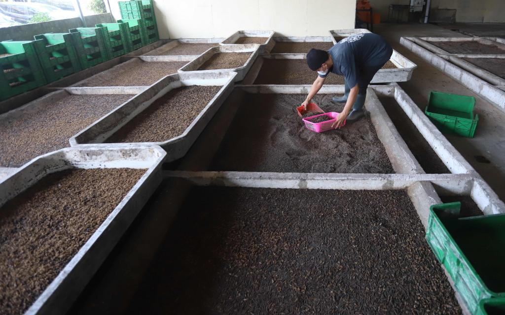
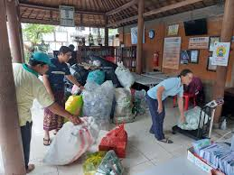
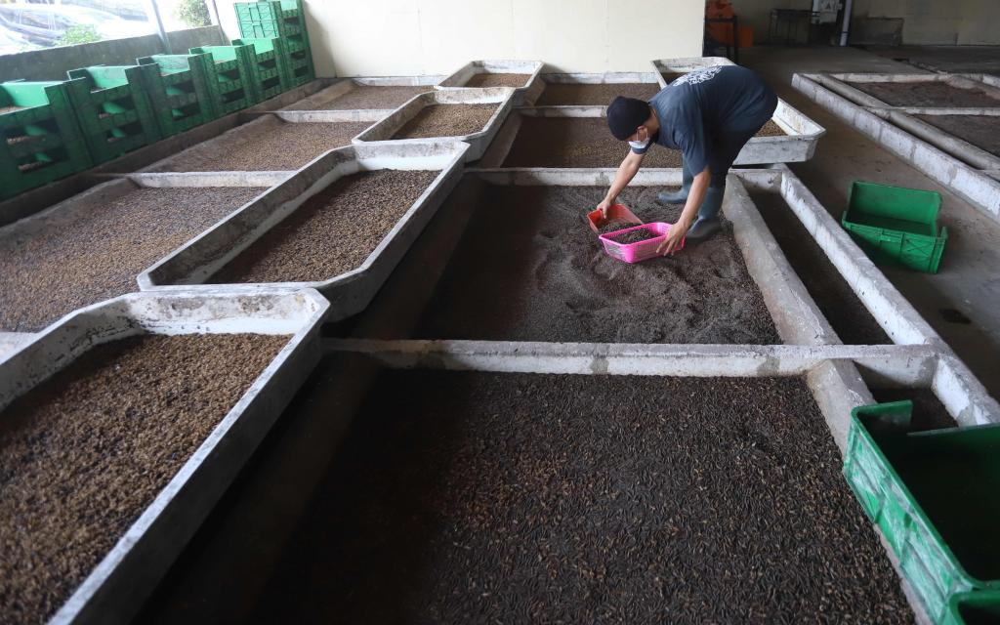
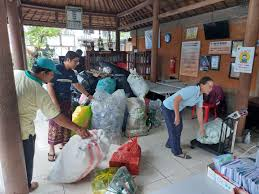

Satu Aksi Dilakukan,
Lingkungan Semakin Terjaga
TARUNADAYA VARNA lahir dari kebutuhan sederhana: lingkungan kita
butuh lebih banyak tangan yang mau turun langsung.
Literasi tentang lingkungan berperan sangat penting untuk menjaga
kebersihan dan keindahan di lingkungan, sehingga alam bisa terjaga
dan diberi waktu lebih lama untuk bertahan
 


